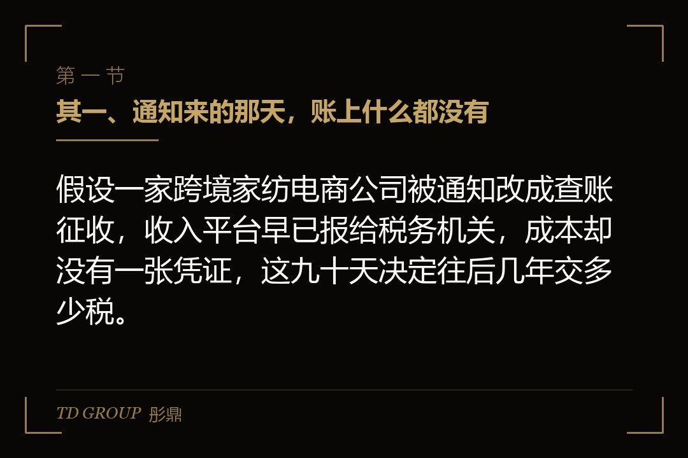
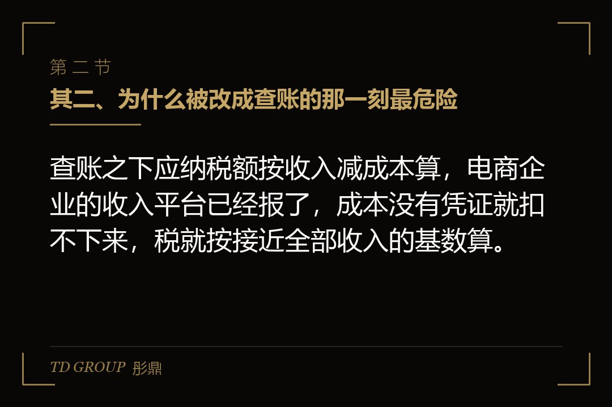
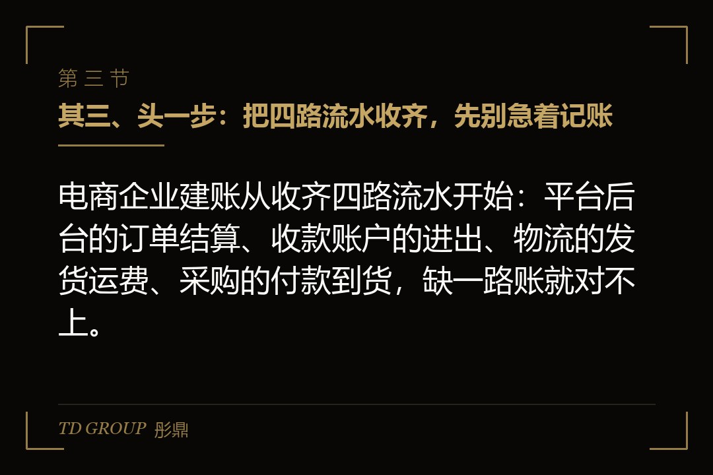

其一、通知来的那天，账上什么都没有

结论先行：假设一家跨境家纺电商公司被通知改成查账征收，收入平台早已报给税务机关，成本却没有一张凭证，这九十天决定往后几年交多少税。
假设有家做跨境家纺的电商公司，在几个海外平台上卖床品，去年营收两千多万元。公司成立头两年没有设置账簿，主管税务机关按《税收征管法》第三十五条，核定了一个应税所得率替它算税。老板一直以为，这就是做电商的常态。
今年夏天，主管税务机关发来通知：公司规模已经超出核定的适用条件，从下个季度起改为查账征收，限期建账并按账申报。查账征收，说白了就是税务机关不再替你估，你自己拿账本证明赚了多少、花了多少，税按账上的数算。
老板把财务叫来问账在哪。答案是：平台后台有流水，收款工具里有余额，采购是老板用个人账户付给工厂的，发票没要过，仓库里有多少货没人盘过。这就是转换那一刻的真实处境：收入端平台已经按季向税务机关报送，成本端却是空的。
从通知那天起算，这家公司有九十天，要走到头一次按查账方式报税。本文就顺着这九十天讲：先做什么，后做什么，哪些事做错了几年都补不回来。核定征收本身是什么、什么条件下税务机关会核，本专题另有一篇讲透，这里不展开。
其二、为什么被改成查账的那一刻最危险

结论先行：查账之下应纳税额按收入减成本算，电商企业的收入平台已经报了，成本没有凭证就扣不下来，税就按接近全部收入的基数算。
查账征收的算法只有一句话：应纳税所得额等于收入减去可以扣除的成本费用。收入这一端，自 2025 年 10 月起，平台企业已经按季度向主管税务机关报送平台内经营者的收入信息，税务机关手里有数。报送机制本身本专题另有一篇细讲，不在本文展开。
危险出在成本那一端。税法允许扣的成本费用，要有合法凭证撑着：采购要有发票，平台服务费要有平台开的票，物流要有运费票。凭证没有，账上写了也扣不下来。收入是实的，成本是虚的，两者一减，应纳税所得额就被顶到接近收入本身。
再假设一家做手机配件的网店，年销售额几百万元，货全从批发市场档口拿，老板用个人微信付款，从没要过发票。改成查账的头一个季度，代账公司按平台流水记了收入，成本一栏几乎空白，算出来的所得税比它核定时代交的高出好几倍。
老板的头一反应是补开发票。档口愿意补的只有一小部分，而且补开的日期都在改成查账之后，改之前那几年的采购已经没法证明。这就是那一刻最危险的地方：不是税率变了，是过去几年没留凭证的习惯，在这一天全部变成了按收入交税的成本。
库存是第三个坑。查账要求账上的存货跟仓库里的货对得上，而核定时代没人盘点。期初库存是多少、按什么单价入账，直接决定今后卖出去的货有多少成本能结转。这些数一开始定错，后面每一个季度都跟着错。
其三、头一步：把四路流水收齐，先别急着记账

结论先行：电商企业建账从收齐四路流水开始：平台后台的订单结算、收款账户的进出、物流的发货运费、采购的付款到货，缺一路账就对不上。
回到那家跨境家纺公司。头十五天，它没有先找代账公司，而是先做了一件基础的事：把过去一整年的流水全部导出来。流水，说白了就是每一笔钱和每一件货进出的记录。电商企业的流水散在下面四个地方。
头一路是平台后台：每个店铺的订单明细、退款明细、平台结算单和平台扣的各项费用。第二路是收款账户：跨境收款工具、对公账户，以及过去用来收款付款的个人账户，一个都不能漏，因为平台报送的收入会跟这些账户去比。
第三路是物流：发货记录、运费账单、海外仓的仓储费用。第四路是采购：付给工厂的每一笔钱、对应的到货单、有没有要到发票。这四路数据凑齐，才能回答查账要问的三个问题：卖了多少、花了多少、还剩多少货。
这家公司导完流水，发现两个平台的结算币种不一样，收款工具把不同店铺的钱混在一个余额里，个人账户里还有一部分收入。这些问题在核定时代无所谓，现在每一条都要归到具体店铺、具体月份。这半个月，就是在把混在一起的东西拆开。
这一步先于记账，是因为流水收不齐就记账，代账公司只能按拿到手的部分记，而漏掉的那部分会在平台报送的数据里被税务机关看见。收入被看见、成本没记上，正是上一章讲的那种按收入交税的局面。
其四、第二步：核定期间的历史不用重算，但要说得清
结论先行：核定期间已按核定方式纳税的收入不需要重新计算，需要做的是定出期初数：库存、应收、应付和固定资产各是多少，并附上依据。
老板最担心的一件事，是改成查账以后，税务机关会不会把过去几年按核定交的税全部推倒重算。一般来说不会：核定征收是税务机关依法作出的征收决定，那段期间的税已经按那种方式算过。转换是从新的起点往后查账，不是把过去几年重新翻一遍。
但「不用重算」不等于「不用管」。查账的账簿要有期初数，也就是转换那一天，公司手里有多少货、别人欠公司多少钱、公司欠别人多少钱、有哪些设备和固定资产。这几个数没有，往后的账就没有起点，成本结转从头就错。
那家跨境家纺公司在第二个月做的就是这件事：仓库和海外仓各盘一次点，按最近一批采购价给存货定价；把平台里还没结算的货款列成应收；把欠工厂的货款列成应付。这些数做成一份期初清单，附上盘点记录和采购单，将来税务机关问起有据可查。
有一种情况例外，那就是核定期间有收入根本没申报过。国家税务总局 2026 年 7 月曝光的一批网店偷税案里，有一家网店经营部，私户收款、没有办理纳税申报，少缴税款 544.72 万元，追缴税款加滞纳金加罚款合计 971.29 万元，约为少缴税款的两倍上下。
这类情况不属于衔接问题，属于补税问题。私户收款的收入，在核定的定额或应税所得率里从来没有体现过，税务机关查实的是隐匿收入，按偷税追缴税款、滞纳金并处罚款。补税那天的数怎么算出来的，本专题另有一篇专讲，这里只说一句：转换之前自己先把这段历史理清楚，比被查出来便宜得多。
其五、第三步：退货和刷单，账上要分开处理
结论先行：退货凭平台退款记录冲减收入，是正常处理；刷单的流水不是真实销售，但拿不出证据就会被当成收入计税，这条路的代价就在这里。
再假设一家做女装直播的公司，退货率高，同时前两年为了冲排名做过刷单。改成查账以后，这两件事在账上要走完全不同的路。退货是正常经营的一部分：顾客退款，平台有退款记录，账上按记录冲减当期收入，退回的货重新入库。
关键在于，冲减收入的依据必须是平台的退款明细，而不是老板口头说的一个退货率。平台向税务机关报送的收入信息里，退款有据可查，企业账上的冲减数要能跟平台的数对上。对不上的那部分，税务机关会按收入看。
刷单就麻烦得多。刷单，说白了就是自己或找人下假订单，把销量做高，钱转一圈回来。这些订单在平台的数据里跟真实订单长得一样，平台报送的收入里包含了它们。企业要主张这部分不是真实收入，就得拿出证据：资金怎么转出去的、怎么转回来的、货有没有真发。
证据拿不出来，这些假订单就会被当成真实收入计税，等于花钱买了个更高的税基。证据拿得出来，等于向税务机关自证做过虚假交易，平台规则和相关法规对这件事另有处理。这就是刷单这条路的代价：它在核定时代看不见，在查账那天变成一道无论怎么答都要付出成本的题。
那家女装公司的处理方式是：从改成查账那天起彻底停掉刷单，历史上那部分按能找到的资金往返记录逐笔列清，列不清的按收入认下来。往后的账干净了，历史的账用钱买了个了断。具体以主管税务机关口径为准。
其六、第四步：把成本凭证一张张补回来
结论先行：成本凭证要从采购、平台费用、物流、汇兑四类去补，补不到的历史成本只能认下来，能补的从改成查账那天起一张都别再漏。
成本凭证的补法，分「往后」和「往前」两个方向。往后简单：从改成查账那天起，采购一律走对公账户付款、一律要发票，平台服务费在平台后台按月下载发票，物流运费按月要票。习惯改过来，往后的成本就扣得下来。
往前难。跨境家纺公司过去一年付给工厂的钱，能补开发票的只有几家长期合作的工厂，其余的只有转账记录和到货单。转账记录和到货单可以证明钱付了、货到了，但能不能作为税前扣除的凭证，各地掌握不同，要跟主管税务机关确认。
平台费用有一个电商企业常忽略的点。境内平台的服务费、推广费，平台后台一般可以开具发票；境外平台扣的费用，没有境内发票，靠的是平台结算单、合同和付款记录。这一类凭证怎么算合规，以主管税务机关口径为准，事先问清，比事后被剔除强。
跨境电商还有一层：收入是外币，成本是人民币，汇率什么时候折算、按哪个汇率折算，决定收入的人民币金额。这一块和跨境电商出口的增值税处理另有专门口径，本文不展开，只提醒一句：折算规则要在建账之初就定下来，中途改，前后的收入就对不上。
补凭证这一步做完，跨境家纺公司的账上，成本从一片空白变成了一部分有发票、一部分有转账和到货单、一部分什么都没有。什么都没有的那部分，老板决定认下来，按不能扣除处理。这是一个用钱换清楚的决定，代价是一次性的，拖着不决的代价是每个季度的。
其七、第五步：谁来做账，多久能做到税务机关看得懂
结论先行：代账公司管的是拿到凭证之后记账报税，收流水、盘库存、要发票这三件事只能公司自己人做，分工不清账就永远做不完。
很多电商老板以为，改成查账无非是多请一家代账公司。再假设一家做户外用品的公司，把所有事都交给代账公司，自己什么都不管。三个月后代账公司交出来的账，收入只有对公账户那一部分，成本几乎是零，库存一栏是空的，因为它拿到的只有这一路流水。
代账公司的活，是把凭证变成账、把账变成申报表。凭证从哪来，它管不了。四路流水的导出、仓库的盘点、跟工厂要发票、把个人账户里的收入归到店铺，这些事要的是对公司业务的了解，只能公司自己人做。哪怕是一个人兼着做，也要有人把这一头抓住。
跨境家纺公司的分工是这样定的：公司里一位运营兼做数据员，每月固定日期把平台、收款、物流、采购四路数据导出交给代账公司；仓库每月末盘一次点；老板自己签每一笔对公付款。代账公司负责记账、算税、报税，遇到拿不准的凭证问题去问主管税务机关。
多久能做到「税务机关看得懂」？标准不高：账上的收入跟平台报送的收入对得上，成本有凭证或者有清楚的说明，库存跟盘点记录对得上，申报表上的数能从账上追出来。跨境家纺公司在第九十天交出头一份按查账申报的季度申报表，做到了这四条。
前面三十天是最乱的，第二个月开始每月能结出账，第三个月申报表跟账对得上。我们跟华尔街俱乐部有合作，类似从核定转过来的电商企业见过一些，九十天能走到这一步的，都是头一个月就把流水收齐的；还在想着怎么把核定保住的，半年过去账还是没起来。
其八、五步清单，和一个要老板自己回答的问题
结论先行：从核定转查账，五步的顺序是收流水、定期初、分退货与刷单、补凭证、定分工，顺序错了每一步都要返工，账一年都建不起来。
把这九十天收成一份清单。头一步收齐四路流水：平台、收款账户、物流、采购，个人账户不能漏。第二步定期初数：盘点存货、列出应收应付和固定资产，做成一份有依据的期初清单。第三步把退货和刷单分开：退货凭平台退款记录冲减收入，刷单能证明的按资金往返列清，不能证明的按收入认下。
第四步补成本凭证：往后一律对公付款、一律要票，往前能补的补，补不到的认下来，凭证口径先问主管税务机关。第五步定分工：公司自己人管数据、盘点和要票，代账公司管记账和申报，每月固定日期交接。五步走完，账就到了税务机关看得懂的程度。
顺序不能倒。先请代账公司再收流水，账会缺一大块；先补凭证再定期初，库存单价没有起点；先记账再处理刷单，账上会混进一批说不清的收入。每一步都是下一步的地基，很多企业改成查账一年了账还是乱的，不是不努力，是顺序错了。
账建起来，还有另一重用处。将来这家公司要融资、被收购或者上市，投资人和券商会翻它核定征收那段历史，翻的正是这份期初清单和这九十天的记录。那是尽调的事，本专题另有一篇专讲，不在本文展开。
彤鼎的税务筹划服务里有一条电商税务合规路线图（含核定征收申请）：先判断这家店的主体和规模能不能核、在哪个主管税务机关能核，申请这一步我们帮你办，最后把核定之前那段历史账衔接上；对已经被改成查账的企业，路线图的落点就是本文这五步。
最后留一个问题给开头那位跨境家纺老板，也留给正在读的你。改成查账的通知到了，补不到凭证的那部分历史成本，你是一次性认下来、把往后的账做干净，还是先只补往后、历史那段留到被问起再说？本质上，这是在决定代价是现在付，还是连着滞纳金往后付。